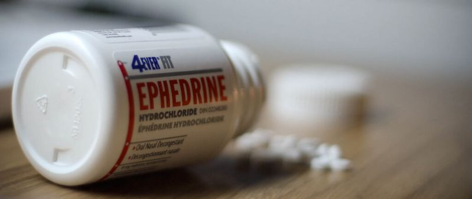

- Nome: Whey protein
- Descrição: Proteína do soro do leite
- Função: Tem como função a recuperação muscular após exercícios físicos de alta intensidade
- Valor aproximado: R$ 100 reais
- Aprovado pela Anvisa? Sim
- Características: Concentrado, Isolado, Hidrolisado

- Nome: Creatina
- Descrição: Substância produzida pelos rins e pelo fígado
- Função: Serve para fornecer energia para os músculos e favorecer o desenvolvimento das fibras musculares
- Valor aproximado: R$ 80 reais
- Aprovado pela Anvisa? Sim
- Características: Desempenho fisico, Tratamento de doenças musculares, Prevenir doenças crônicas

- Nome: BCAA(Branched Chain Amino Acids)
- Descrição: Produto para suplementar a alimentação em aminoácidos
- Função: Desempenha função essencial para o crescimento e a reparação de músculos e tecidos, produção de anticorpos e enzimas
- Valor aproximado: R$ 45 reais
- Aprovado pela Anvisa? Sim
- Características: Reduz a fadiga muscular, Auxilia no crescimento muscular, Livre de colaterais

- Nome: Glutamina
- Descrição: A glutamina é um aminoácido, que pode ser considerada praticamente como não essencial
- Função: Evita que o organismo queime massa muscular para gerar energia durante os treinos, pois auxilia no aumento da reserva de glicogênio muscular
- Valor aproximado: R$ 65 reais
- Aprovado pela Anvisa? Sim
- Características: Melhora da função intestinal, Melhora do humor e bem-estar, Fornecimento de energia para o sistema imunológico

- Nome: Efedrina
- Descrição: É um remédio vasoconstrito
- Função: Ajuda a contrair os vasos sanguíneos do corpo, fazendo aumentar a pressão arterial em casos de queda abrupta da pressão arterial
- Valor aproximado: R$ 10 reais
- Aprovado pela Anvisa? Não
- Características: Excesso de suor, Diminuição ou aumento da pressão arterial, Insônia
